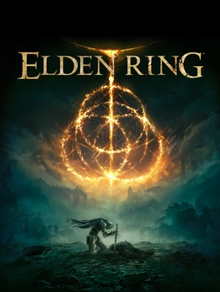

The Souls Series
Demon's Souls
Developed by FromSoftware for the PlayStation 3 under the supervision of Japan Studio, Demon's Souls was published in Japan by Sony Computer Entertainment in February 2009. The game is referred to as a spiritual successor to FromSoftware's King's Field series.
"You have a heart of gold, don't let them take it from ye."
Dark Souls
The Souls Series take place within a dark, medieval fantasy setting, where the player's character fights against knights, dragons, phantoms, demons, and other monstrous or supernatural entities.
"So Lonestar, now you see that evil will always triumph, because good is dumb."
Sekiro: Shadows Die Twice
Sekiro: Shadows Die Twice is a 2019 action-adventure game developed by FromSoftware and published by Activision. The game follows a shinobi known as Wolf as he attempts to take revenge on a samurai clan who attacked him and kidnapped his lord.
"Hesitation Is Defeat."
The Open World
Elden Ring
 Elden Ring is an open world action role-playing game developed by FromSoftware and published by Bandai Namco Entertainment. The game was directed by Hidetaka Miyazaki and made in collaboration with fantasy novelist George R. R. Martin, who provided material for the game's setting.
"Feel Free To Go Off And Die In A Ditch Somewhere."
Gallery